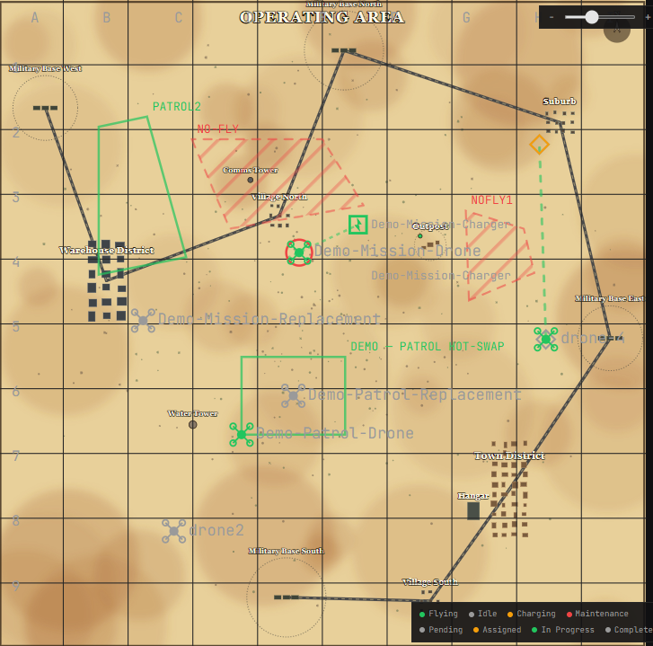
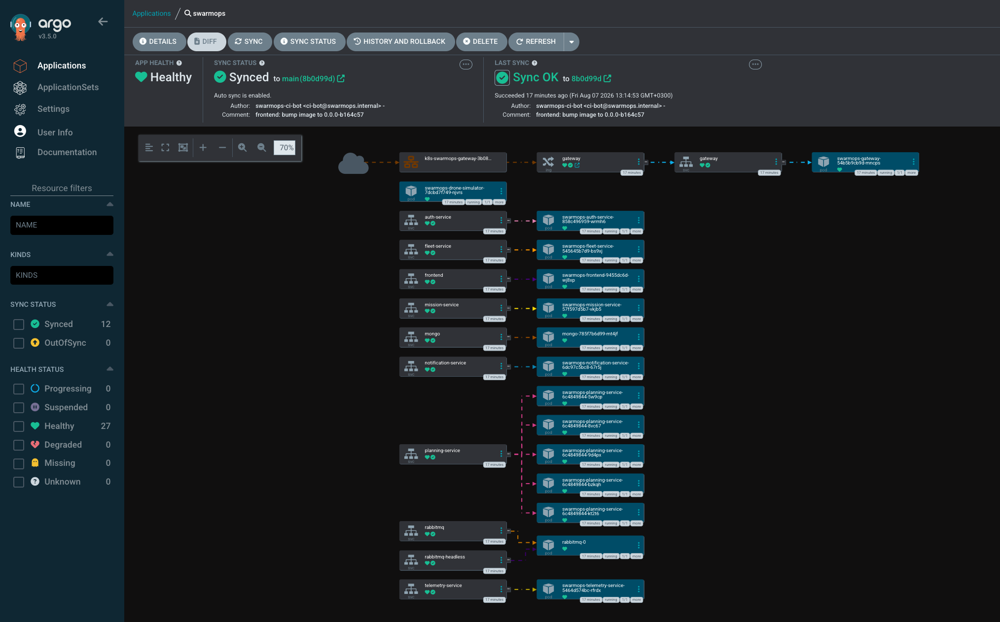
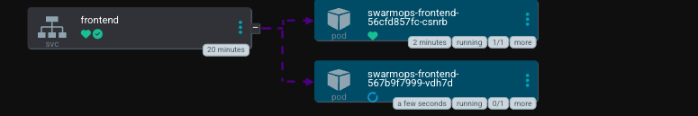
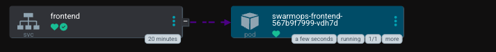

פרויקט גמר · 2026
מערכת שליטה ובקרה מרכזית לרחפנים
← → / SPACE
פרויקט גמר · 2026
מערכת שליטה ובקרה מרכזית לרחפנים
הצוות


שלושתנו שירתנו בתפקיד קרבי, כל אחד בתפקיד אחר.
הרקע
בכל אחד מהתפקידים האלה נפגשנו עם רחפנים/מפעילי רחפנים.


ובנוסף, כולנו פגשנו את אותן הבעיות בדיוק.
הבעיה
מפעיל רחפן יכול להתרכז ברחפן אחד באוויר. מעבר לזה, יותר מדי משתנה בבת אחת.
הפוקוס נעלם ואיכות המשימה נפגעת.
המחיר
כל רחפן שמתווסף מוסיף החלטות. מרגע מסוים מפעיל אחד לא מספיק, והטעויות עולות בזמן טיסה ובסוללות.
הערכה להמחשה: שיבוץ לא אופטימלי מוסיף כ-15% זמן טיסה מיותר.
הרעיון
במקום שרחפן יופעל ידנית, המערכת מקבלת את התמונה המלאה ומחזירה תוכנית מוכנה תוך שניות ומשלחת את הרחפן למשימה.
המערכת
במקום תוכנה אחת גדולה, שישה חלקים קטנים. כל חלק יכול "ליפול" ו- "לקום" לבד.
planning הוא המוח: הוא מחליט מי טס לאן ולמה.
האילוצים
בזמן אמת
בפעולה
רחפן באמצע משימה מקבל אחת דחופה יותר, ועובר אליה לבד.
בפעולה
כשהסוללה נגמרת, רחפן אחר ממשיך את הסיור בלי לפספס רגע.
הסימולטור
טס, משדר תמונה, ומגיב בזמן אמת. בלי חומרה אמיתית.
הנראות
איפה כל רחפן, כמה סוללה נשארה, ובאיזו משימה הוא.

הענן
הכל רץ בענן של אמזון, ברשת פרטית וסגורה.
שני אזורי זמינות, כדי שנפילה של אחד לא תהפוך את המערכת לבלתי שמישה.
העלות
על מנת לצמצם חיובים בתהליך הפיתוח
כיבינו את הסביבה בסוף כל יום עבודה.
הפריסה
אף אחד לא מתקין גרסאות ידנית על השרת. כותבים קוד, והמערכת מסנכרנת את עצמה אליו.
גרסה חדשה יוצאת בהדרגה, ולא לכולם בבת אחת.
הפריסה
כל השירותים בשרת מסונכרנים אוטומטית לקוד. אף אדם לא נגע בהם.

Argo CDהפריסה
הישן ממשיך לרוץ עד שהחדש מוכן. רק אז הוא נעלם.


אפס זמן השבתה — המשתמש לא רואה שום הפסקה.
הפריסה
הגרסה החדשה של שירות התכנון נחשפת בשלבים, עם בדיקה אוטומטית ביניהם.
אם הבדיקה מזהה חריגה, הפריסה נעצרת וחוזרת אחורה לבד.
הפריסה
באמצע ההשקה שתי הגרסאות חיות במקביל. בסיום, הישנה מתפנה.
 באמצע ההשקה — ישן וחדש יחד
באמצע ההשקה — ישן וחדש יחד
 בסיום — הישן ירד
בסיום — הישן ירד
ניטור
כל שירות מדווח על עצמו. כשמשהו חורג, המערכת מתריעה לבד.
 Grafana · לוח המחוונים של SwarmOps
Grafana · לוח המחוונים של SwarmOps
ניטור
לא רק אם המערכת חיה, אלא כמה בקשות, כמה כשלונות, וכמה זמן לוקח לחשב תוכנית.
אבטחה
סיכום
SwarmOps
תודה. נשמח לשאלות.